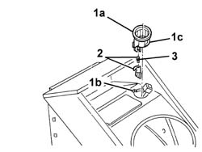

7065C73 cigar lighter bulb - r r - includes r r cigar lighter
- Path
- Procedures > 70 FITTINGS > 7065 SEAT BELTS AND ACCESSORIES > 7065C accessories and decorations > 7065C73 cigar lighter bulb - r r - includes r r cigar lighter
- Kind
- repair procedure (removal / refitting; the operation number is the code)
- Applies to
- all engines; all production periods
- Interactive page
- https://sloeber94.github.io/elrnDB-a147/en/#/3025938
Applies to: all engines; all production periods
 Removing
Removing
 Refitting
Refitting7045A10 l/h or r/h front seat (one) - r+r (left and right sides)
7040A65 passenger compartment box lock , one , r r (left and right sides)
3380A44 handbrake/linkage protection - r+r
7040L28 tunnel switch panel - r r
7065C72 front cigar lighter socket/power point - fasten
1. Undo retainer (1a) from seat (1b) and remove ring nut (1c).
2. Extract the bulb holder with the bulb.
3. Withdraw the bulb from the bulb holder (press fit).

Applies to: all engines; all production periods
Refitting
RemovingInsert the bulb in the bulb holder.
Refit the bulb holder in its seating.
Fit the ring nut in its seat and engage the retainer.
7065C72 front cigar lighter socket/power point - fasten
7040L28 tunnel switch panel - r r
3380A44 handbrake/linkage protection - r+r
7040A65 passenger compartment box lock , one , r r (left and right sides)
7045A10 l/h or r/h front seat (one) - r+r (left and right sides)
Check that the bulb is working.
Topics linked from this page (7)
- 3380A44 handbrake/linkage protection - r+r
- 7040A65 passenger compartment box lock , one , r r
- 7040L20 tunnel trim - r r
- 7040L28 tunnel switch panel - r r
- 7045A10 l/h or r/h front seat (one) - r+r
- 7045B18 front seat arm rest
- 7065C72 front cigar lighter socket/power point - fasten